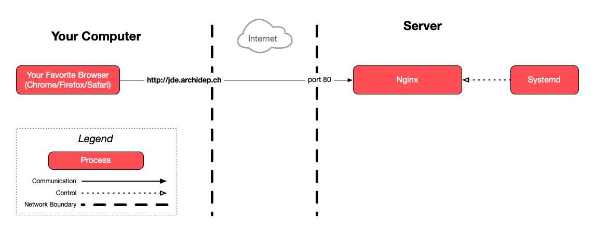

Connect to your cloud server with SSH for this exercise.
Deploy a static site with nginx
The goal of this exercise is to deploy a static website (only HTML, JavaScript and CSS) with nginx.
On this page
Table of contents
 Legend
Legend
Parts of this exercise are annotated with the following icons:
-
 A task you MUST perform to complete the exercise
A task you MUST perform to complete the exercise
-
 Optional step that you may perform to make sure that
everything is working correctly, or to set up additional tools that are not required but can
help you
Optional step that you may perform to make sure that
everything is working correctly, or to set up additional tools that are not required but can
help you
-
 Advanced tips on how to go further (or
challenges!)
Advanced tips on how to go further (or
challenges!)
 The end of the exercise
The end of the exercise-
 The architecture of the software you ran or
deployed during this exercise
The architecture of the software you ran or
deployed during this exercise
-
 Troubleshooting tips: how to fix common problems you might
encounter
Troubleshooting tips: how to fix common problems you might
encounter
Requirements
This guide assumes that you are familiar with reverse proxying and that you have completed the previous DNS configuration exercise, where you configured an A record for your server in the domain name system.
Install nginx on the server
Connect to your server and make sure you have nginx installed as shown during the course.
Put the static website on the server
It is suggested that you use the provided HTML, JavaScript and CSS clock, but you could deploy any other static HTML website.
Still on your server, clone the following repository into your home directory: https://github.com/ArchiDep/static-clock-website
Make sure the files are there:
$> ls static-clock-website
index.html README.md script.js style.css
Create an nginx configuration file to serve the website
Create an nginx configuration file for the website. You may name the file
clock and put it in nginx’s /etc/nginx/sites-available directory. You can do
that with nano or Vim. You will need to use sudo as that directory is only
writable by root.
You can add the .conf extension to the file or not, as you wish. Nginx does
not need its configuration to have a particular extension.
Take the static configuration example from the course and put it in the file. You should modify it to:
- Use the subdomain you configured for your server during the previous DNS
exercise. This is done by customizing nginx’s
server_namedirective in yourserverblock. - Serve the files in the repository you just cloned. This is done by customizing
nginx’s
rootdirective.
Read How nginx processes a request and Serving Static Content section of the nginx Beginner’s Guide if you want to know more..
You /etc/nginx/sites-available/clock file on your server should look something
like this:
server {
listen 80;
server_name jde.archidep.ch;
root /home/jde/static-clock-website;
index index.html;
# Cache images, icons, video, audio, HTC, etc.
location ~* \.(?:jpg|jpeg|gif|png|ico|cur|gz|svg|mp4|ogg|ogv|webm|htc)$ {
access_log off;
add_header Cache-Control "max-age=2592000";
}
}
Enable the nginx configuration
By default, configurations stored in the sites-available directory are
available, but not enabled.
Indeed, if you check what is included by the main /etc/nginx/nginx.conf file,
you will see that sites-enabled is there, but not sites-available:
$> cat /etc/nginx/nginx.conf | grep include
include /etc/nginx/modules-enabled/*.conf;
include /etc/nginx/mime.types;
include /etc/nginx/conf.d/*.conf;
include /etc/nginx/sites-enabled/*;
The command pipeline above uses cat and grep to print all the lines which
contain the word “include” in the specified file.
To enable a configuration file, the convention is to create a symbolic link in
sites-enabled, which points to the actual configuration file in
sites-available. This allows you to work on your configuration for a while
before enabling it.
Enable the clock configuration by creating the correct symbolic link:
$> sudo ln -s /etc/nginx/sites-available/clock /etc/nginx/sites-enabled/clock
The -s option makes the ln (link) command create a symbolic
link, i.e. a simple pointer to a file that resides in another directory. Without
the -s option, it would create a hard link.
Make sure the symbolic link points to the correct file:
$> ls -l /etc/nginx/sites-enabled/clock
lrwxrwxrwx 1 root root 32 Jan 10 17:07 /etc/nginx/sites-enabled/clock -> /etc/nginx/sites-available/clock
Give nginx access to the files
In recent Ubuntu versions, nginx does not have access to your home directory by
default. When reading files, nginx uses the www-data user (you can see this
configured in /etc/nginx/nginx.conf).
If you look at the permissions for your home directory, it will probably be
rwxr-x---, meaning that your user has access to it, your group has access to
it, but other users don’t:
$> ls -la /home
total 16
drwxr-xr-x 4 root root 4096 Oct 19 13:01 .
drwxr-xr-x 19 root root 4096 Nov 23 11:23 ..
drwxr-x--- 15 jde jde 4096 Nov 23 15:34 jde
You should give permission to the www-data user to access your home directory.
One way to quickly do this by adding the www-data user to your group (replace
jde with your Unix username):
$> sudo usermod -a -G jde www-data
This is not necessarily the best solution from a security standpoint. It means that nginx will likely have read/execution access to all the directories and files owned by your user. This is probably more than it should have.
The clean and secure solution would be to put the files in a dedicated directory with appropriate permissions, somewhere outside your home directory.
For example, you could create a /var/www/clock directory owned by you and
clone the repository there. If you don’t want other users to access this
directory, you could even restrict permissions further by making this directory
owned by you and the www-data group (e.g. sudo chown e:www-data /var/www/clock), and removing all permissions for other users (e.g. with sudo chmod o-a /var/www/clock).
Reload the nginx configuration
Nginx does not automatically reload its configuration files when they change.
First, you should check whether the changes you have made are valid. The nginx -t command (as in test) loads all the nginx configuration (including files
added with include) and checks that they are valid:
$> sudo nginx -t
nginx: the configuration file /etc/nginx/nginx.conf syntax is ok
nginx: configuration file /etc/nginx/nginx.conf test is successful
If an error occurs here, you may have made a mistake in the configuration. (See
Troubleshooting if you get an error about
server_names_hash_bucket_size.)
Nginx reloads its configuration when it receives the HUP
signal. You could find the process ID of the nginx master
process and send the signal with kill -s HUP <ID>. However, the nginx
command helpfully allows you to do that in a much simpler way:
$> sudo nginx -s reload
The -s option sends a signal to the nginx master process.
You can also do the same thing through systemd with the following command: sudo systemctl nginx reload. This will also ask nginx to reload its configuration.
If the command indicates no errors, nginx should have reloaded its configuration.
See it in action
Visit the subdomain of your server, e.g. http://jde.archidep.ch (replacing jde
with your username and archidep.ch with your assigned subdomain) and you
should see the website working.
What have I done?
You have configured nginx to act as a web server to serve static content (HTML, JavaScript and CSS that can be sent unmodified to the client) under your custom subdomain.
You can serve any static web content this way. You can also make nginx serve as
many separate websites as you want under different domains by creating multiple
configuration files with different server_name directives, all on the same
server (your Azure instance).
Architecture
This is a simplified architecture of the main running processes and communication flow at the end of this exercise:

{kind=link}
Note
Note that this diagram only shows the processes involved in this exercise, ignoring the PHP Todolist we have also deployed on the server.
Troubleshooting
Here’s a few tips about some problems you may encounter during this exercise.
[emerg] could not build the server_names_hash, you should increase server_names_hash_bucket_size
If you get an error about server_names_hash_bucket_size, it may be because
your domain name (the value of your server_name directive) is too long for
nginx’s default settings.
In that case, edit the main nginx configuration with sudo nano /etc/nginx/nginx.conf and add the following line in the http section:
server_names_hash_bucket_size 256;
The nginx configuration is correct but I get an error page in the browser
If your nginx configuration is syntactically correct (i.e. sudo nginx -t shows
no error) but you still get an error page in the browser, you can take a look at
the nginx error log to see if it helps identify the issue:
$> sudo cat /var/log/nginx/error.log
Also take a look at the following subsections depending on the error you see in your browser.
403 Forbidden
If you get a 403 Forbidden error, it usually means that nginx has insufficient
permissions to access the directory you have specified with the root directive
(or the index.html file in that directory). Make sure that the www-data user
nginx is running as can access all the directories in the root you have
specified.
If you have Ubuntu 22+, this may be due to the fact that the permissions of your Unix user’s home directory are more restrictive than in the past. You can check whether this is the case by listing all home directories with their permissions:
$> ls -la /home
total 16
drwxr-xr-x 4 root root 4096 Oct 19 13:01 .
drwxr-xr-x 19 root root 4096 Nov 23 11:23 ..
drwxr-x--- 15 jde jde 4096 Nov 23 15:34 jde
If the permissions of your home directory are drwxr-xr-x, then this solution
does not apply to you. However, if the permissions are drwxr-x--- like above,
then read on.
You should give permission to the www-data user (the user nginx runs as) to
access your home directory. You can do this by adding it to your group (replace
jde with your Unix username):
$> sudo usermod -a -G jde www-data
Restart nginx once you have changed the permissions:
$> sudo nginx -s reload
404 Not Found
If you get a 404 Not Found error page, it usually means nginx cannot find a file
to serve (e.g. the index.html page) in the directory you have specified with
the root directive.
Are you sure that the value of your root directive is correct? Does that
directory actually exist?